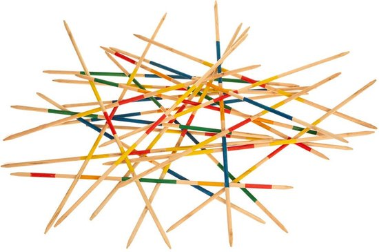

Introduction
Le Mikado est un jeu d'adresse et de patience qui consiste à retirer des baguettes d'un tas sans faire bouger les autres. Ce jeu est originaire d'Asie et est très apprécié pour sa simplicité et son aspect challengeant.
Comment jouer ?
Pour jouer au Mikado, suivez ces étapes :
- Mélangez les baguettes et laissez-les tomber en tas sur une surface plane.
- À tour de rôle, essayez de retirer une baguette du tas sans faire bouger les autres.
- Si vous réussissez, vous conservez la baguette. Si vous échouez, c'est au tour du joueur suivant.
- Le jeu se termine lorsque toutes les baguettes ont été retirées. Le joueur avec le plus de baguettes gagne.
Conseil : Utilisez des mouvements lents et précis pour maximiser vos chances de succès.
Images du jeu
Conclusion
Le Mikado est un jeu ludique qui peut être apprécié par tous les âges. Il permet de développer la concentration et la motricité fine. Amusez-vous bien !